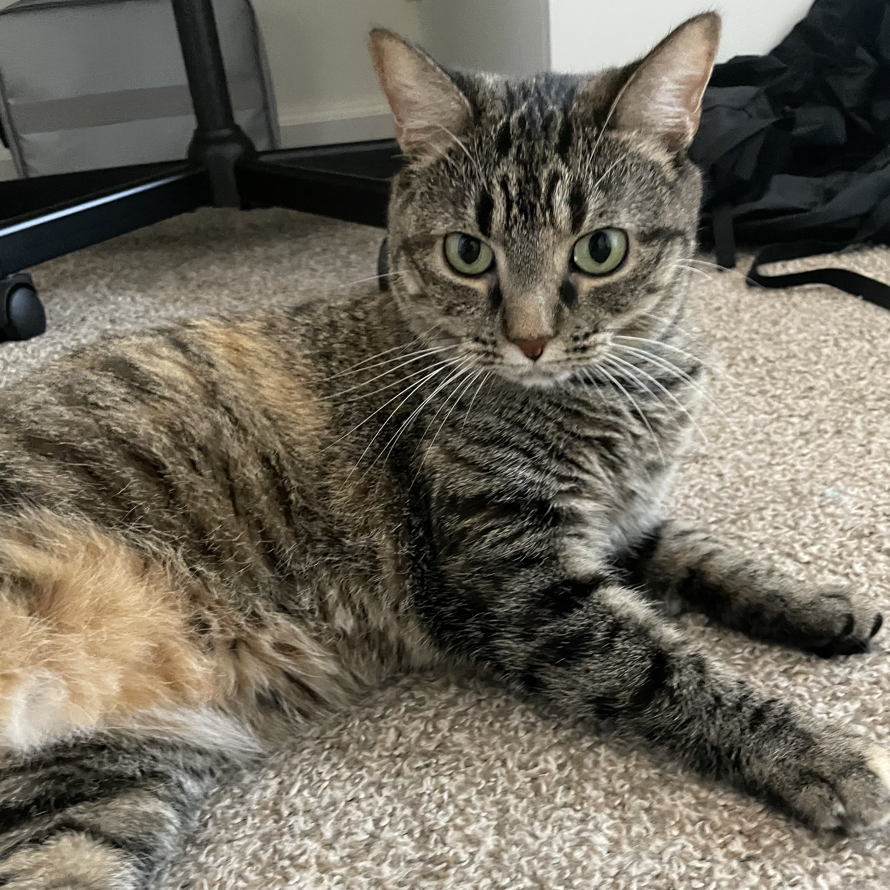
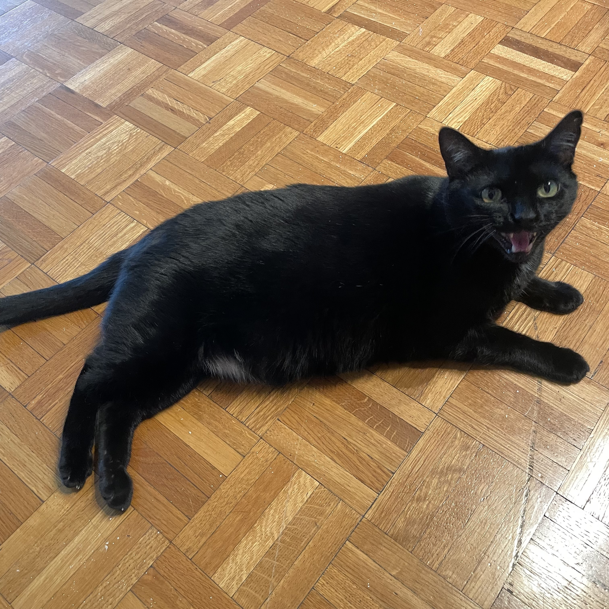
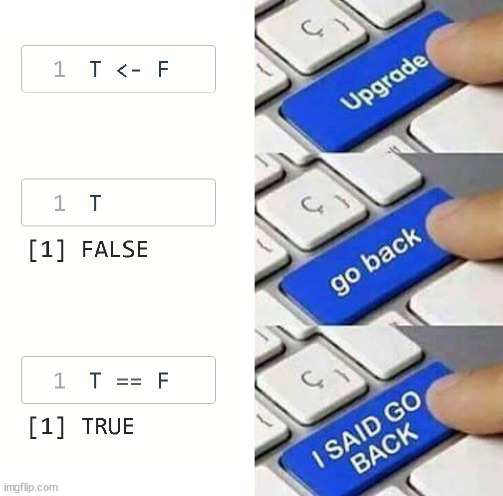
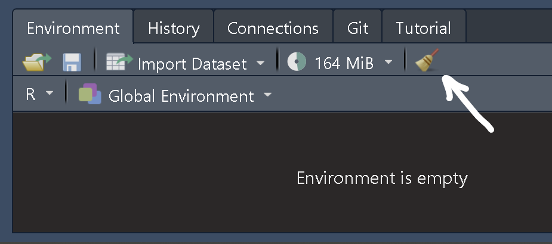
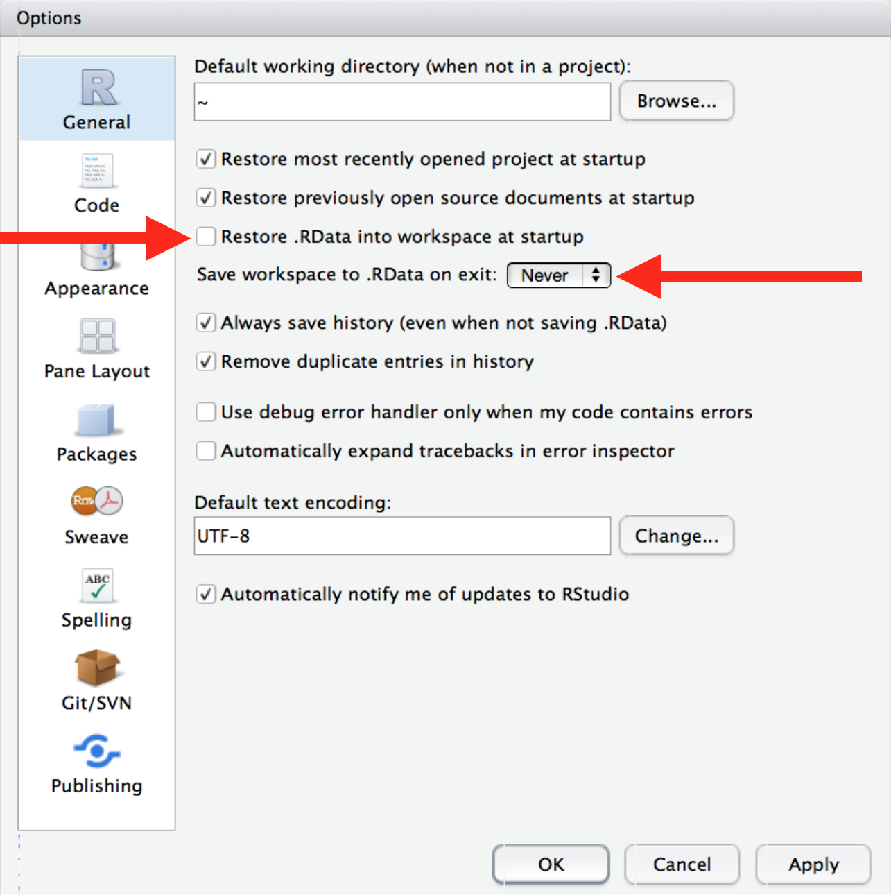
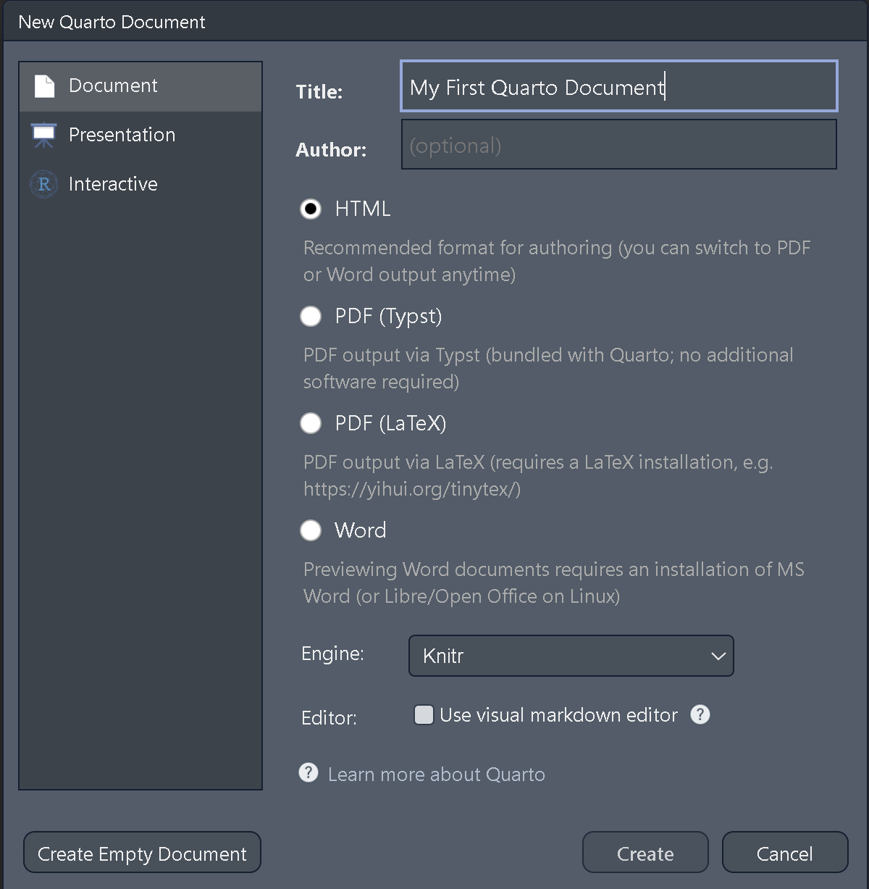
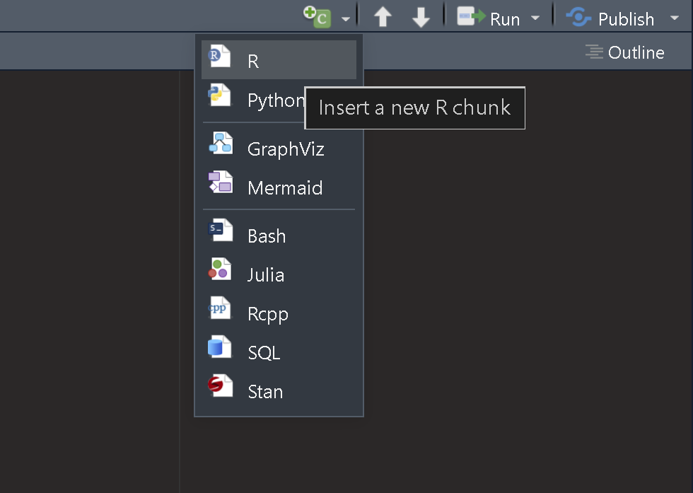
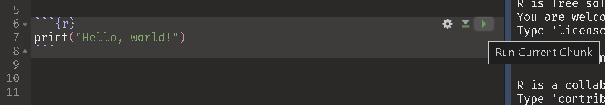
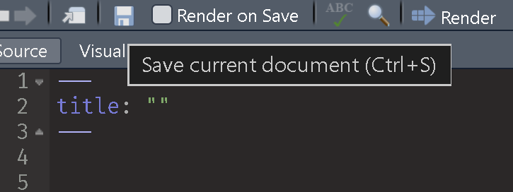
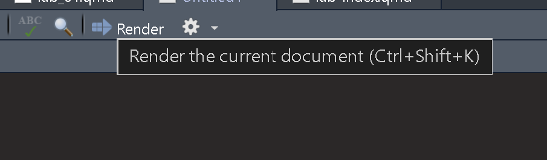

print("Hello, World!")[1] "Hello, World!"PSYC 6019-A01 / PSYC 6022-A01
2026-08-28 | Lab 1
In this lab you will learn how to…
apply the statistical concepts taught in lecture programmatically
create effective and efficient data visualizations
wrangle / manage real, messy data into workable, tidy data
code with best practices that will make things smoother for present, but especially future, you
Hi! I’m Jess Helmer. I’m a third-year PhD student in Quantitative Psychology.
My research focuses on the measurement and modeling of psychological data.
○ Email: jhelmer3@gatech.edu
○ Office: J.S. Coon Rm 241
○ Office Hours: Fridays, 1–2pm, my office / Zoom
○ Or by appointment


I am available as a resource! Please feel free to reach out / email anytime if you need help, have questions about the lab, or have any suggestions or feedback for the class.
I encourage helping each other / collaboration during the lab. While working on assignments, I will try to answer everyone’s questions as soon as I can, but if someone near you is confused and you can help, feel free to discuss.
I plan on recording the lecture component of labs on Zoom. If you need to join remotely (e.g., not feeling well, traveling, etc.) please email me at least 15 minutes before lab starts so I can send you the Zoom link.
I will do a lot of live coding during lab. I encourage you to follow along with me!
Students are expected to attend and participate in all scheduled labs.
We will have a lab lecture and activity each week (barring institute holidays) except for times when lab gets swapped with lecture (see course schedule).
Students are expected to work on the activity during the scheduled lab time.
Lab activities are due on Canvas at 11:59pm the same day they are distributed.
We will not be able to accept late lab activities!
Activity distributed after lecture (with plenty of time to complete!)
Please submit both the rendered (.html or .pdf) and the source Quarto (.qmd) file.
○ Without your R code, we will not be able to give any credit.
As long as a complete attempt is made, full credit will be given.
One of the best ways to learn R is to work on an independent data analysis project with real data.
Opportunity to immerse yourself in the language, explore the messiness of real data, make and learn from mistakes.
We can help you find a dataset if needed, but you are strongly encouraged to find data you are particularly interested in.
More details to come—will be due at the end of the semester.
AI can be a very helpful tool for learning coding! Feel free to use it to clarify concepts, troubleshoot code, or syntax explanations.
However, for the assignments, your code needs to be your own.
It is important to practice and gain experiencing coding independently!
All free, open source materials for learning R
Introduction to Data Exploration and Analysis with R (IDEAR)
Similar content as R4DS but with a different writing style.
An excellent resource for getting started with Git and GitHub as an R user.
Open source coding language, primarily used for data analysis and data science.
Coding (per the IDEAR book):
“Giving very specific instructions to a very stupid machine.”
print("Hello, World!")[1] "Hello, World!"R has many “packages” for statistical functions and a large, enthusiastic community of statistical programmers.
○ We will get to know many of these packages!
R is open source: you can see the exact code that underlies the functions you use
○ And if you’d like, you can modify it
Because R is a programming language, you can make your own code / functions as commands, instead of just relying on existing features.
An interface for using and coding in R
Helps keep R files and projects organized
Helps “knit” together code, output, and text to create reports
We need to download two things:
R is the language, RStudio is an Interactive Development Environment (IDE).
We will use R through RStudio.
Files, Plots, Packages
Environment, History
Console
2 + 4[1] 62 + 4 / 4[1] 3PEMDAS!
2 ^ 3[1] 8c(2, 4, 6)[1] 2 4 6c(1, "hello!", "Georgia Tech")[1] "1" "hello!" "Georgia Tech"c() function
? operator to see the documentation for a function
?cc(2, 4, 6)[1] 2 4 6c(2, "hello!", "Georgia Tech")[1] "2" "hello!" "Georgia Tech"Quotes around 1 in the second vector, not in the first
Vectors can only hold one type of data!
Numeric
Character
class() function tells us the data type
Logical type, TRUE or FALSE. TRUE and FALSE can be abbreviated as T and F.
TRUE[1] TRUEc(1, "hello!", TRUE)[1] "1" "hello!" "TRUE" c(TRUE, FALSE)[1] TRUE FALSEIn R, we can assign objects (including functions) to some variable with the assignment operator <-.
You can also print objects by just running their name.
# assign variable a the value 1
a <- 1
# print a
a[1] 1a <- c(1, 2, 3)
a[1] 1 2 3a <- c("Hello, world!")
a[1] "Hello, world!"Every time we reassign a value to a, it holds that new value
Overwrites previous value!
Overwriting can mess stuff up!

Generally, we want to avoid overwriting these “reserved words” or names of key functions.
But, how can we fix things if we do?
Clearing your environment and restarting R frequently helps you reset

○ Session > Restart R.
○ Use the shortcut Ctrl + Shift + F10 (Windows) or Cmd + Shift + F10.
I strongly (!!) suggest you change these default RStudio settings in order to always start R with a blank slate.
Tools > Global Options

Table of data organized by columns
Can make by hand with the data.frame() function:
data.frame(
x = c(1, 2, 3),
y = c("a", "b", "c"),
z = c(TRUE, FALSE, TRUE)
) x y z
1 1 a TRUE
2 2 b FALSE
3 3 c TRUEShift+Enter to go to new line on Console
Most of the time, we import data (and don’t manually type it in)
In console, can press up arrow to reload last line of code
If you already have vector objects saved, you don’t have to type them in again
data.frame(a = a,
b = b,
c = c) a b c
1 1 2 3
2 2 3 4
3 3 4 5data.frame(a, b, c) a b c
1 1 2 3
2 2 3 4
3 3 4 5data.frame(A = a, b, c) A b c
1 1 2 3
2 2 3 4
3 3 4 5R script files end with .R
File > New File > R Script
Ctrl + Shift + N
RStudio’s way of helping organizing files, scripts, etc.
I strongly recommend this!!
○ File > New Project
○ If you don’t already have a folder associated with this class, “New Directory”
○ If you do, “Existing Directory”
All R Scripts under the same project share a working directory
○ Location of files
getwd() tells us the location of our working directory
setwd("C:/Users/Desktop/R Example") sets the working directory
Or, here::here() lets us do relative directories (my favorite!)
○ Just use the command at the top of the file to see where your directory is
A way of typesetting R code into a document
End in .qmd
File > New File > Quarto Document…
Input Title, Author, Date
How we will complete assignments


How to insert an Quarto code chunk in RStudio
○ Type ```{r}.
○ Add your R code.
○ Close the chunk with ```.
○ Use the shortcut Ctrl + Alt + I (Windows) or Cmd + Option + I.

How to run Quarto code chunks in RStudio
○ Use the shortcut Ctrl + Enter (Windows) or Ctrl + Return (Mac)

Can also select a variable and run it to see its output (helpful!)
Important to ensure that your code isn’t unintentionally relying on hidden objects in the environement
○ E.g., you created an object, deleted the line to create it, but R still sees it there
When you try to render your file, it will clear, restart, and run all code
Clearing your environment and restarting R frequently helps you avoid this
Press Ctrl + S frequently to save your work!!
Can also press the save icon in the top left

Rendering will combine text, syntax, results, and output into your choice of a HTML, PDF, Word file, or more. Default is HTML.

If you’re comfortable on the command line, you can run quarto render in your project directory or quarto render path/to/file.qmd.
Run code often to ensure it’s working
Restart R frequently
Quarto uses Markdown, an easy-to-read plain text format. Learn more about Markdown formatting and capabilities on Quarto’s Markdown Basics page.
In Quarto, we can use LaTeX (pronounced “lah-tech” or “lay-tech”) to render nice-looking math symbols and equations
\[ y_i = \beta_0 + \beta_1 x_i + \epsilon_i \qquad \quad \bar{x} = \frac{\sum x}{N} \qquad \quad s^2 = \frac{\sum\limits_{i=1}^{N} (x_i - \bar{x})^2}{N-1} \]
For inline LaTeX (e.g., \(a^2 = b^2 + c^2\)), wrap the equation in single dollar signs $a^2 = b^2 + c^2$.
For LaTeX on its own line, like above, wrap the equation in double dollar signs $$a^2 = b^2 + c^2$$
\[y_i = \beta_0 + \beta_1 x_i\]
| subscript | a_i |
\(a_i\) |
| superscript | a^2 |
\(a^2\) |
Need brackets if more than one character:
x_ij |
\(x_ij\) |
x_{ij} |
\(x_{ij}\) |
\ is an escape character: tells LaTeX to interpret the following text differently than normally
sum |
\(sum\) |
\sum |
\(\sum\) |
\sum\limits_{i=1}^{N} |
\(\sum\limits_{i=1}^{N}\) |
\frac{a}{b} |
\(\frac{a}{b}\) |
\bar{x} |
\(\bar{x}\) |
\times |
\(\times\) |
Greek characters
\alpha |
\(\alpha\) |
\beta |
\(\beta\) |
\mu |
\(\mu\) |
\sigma |
\(\sigma\) |
\epsilon |
\(\epsilon\) |
An live in-browser LaTeX editor I use: latexeditor.lagrida.com
Math symbols cheat sheet: cmor-faculty.rice.edu/~heinken/latex/symbols.pdf
Usually pretty easy to find answers just by Googling (e.g., me looking up the summation syntax earlier) and on Stack Overflow
No expectation of memorizing LaTeX syntax
iris dataset has measurements of 150 flowers, already exists within R.
View() (note the capital V) will open the data in an interactive viewer.
View(iris)$ operator references columns within a dataframe
Dataframes contain columns of variables
head(iris$Petal.Length)[1] 1.4 1.4 1.3 1.5 1.4 1.7mean(x) for mean, sd(x) for standard deviation, and var(x) for variance of a vector x.
Let’s make our first plots!
Do we like this plot?
Objectives:
Do some basic R!
Get familiar with Quarto